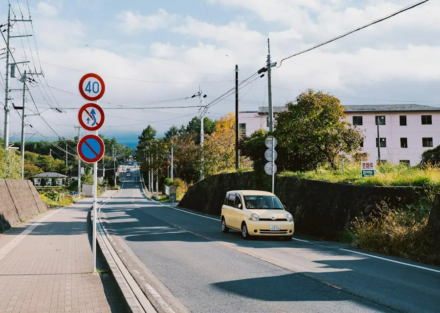
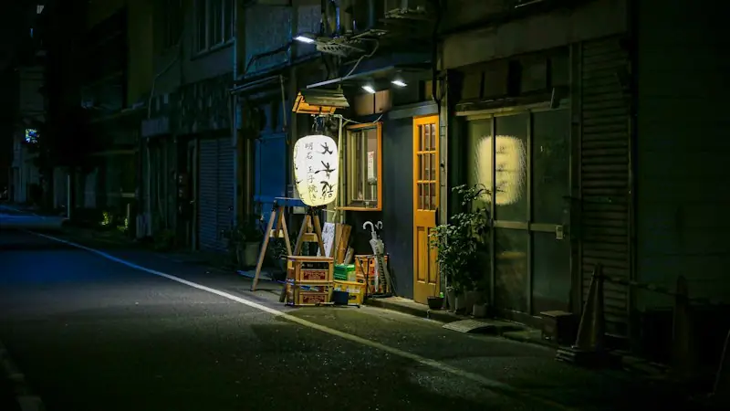
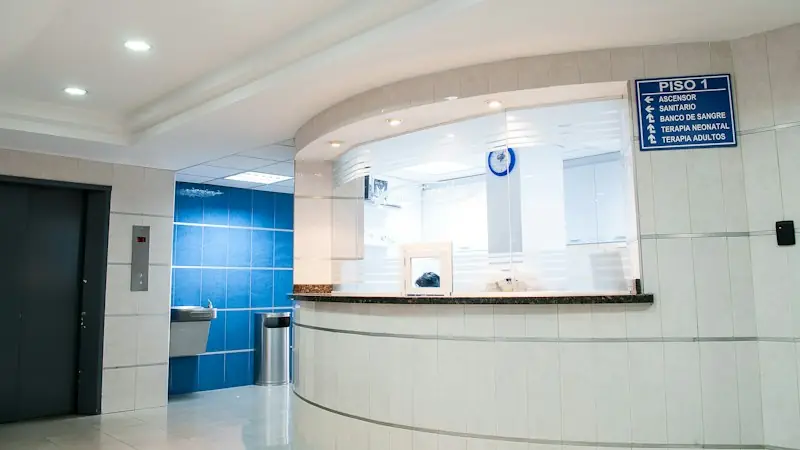
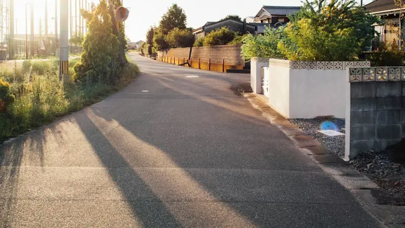

01 / 検索看板を見ても、
看板を見ても、
検索で見つからない。
店名の表記や検索情報が整っておらず、気になったお客様がたどり着けない。
看板やチラシで知った人が、検索の先で迷っていませんか。営業中の医院・店舗のGoogleマップ・口コミ・予約までを無料で点検します。看板を増やす予定がなくても大丈夫です。

看板から、その先まで。
検索の先で起きていること
医院やお店を知った人が、来院・来店の前に離れてしまう。
そんな小さな食い違いを見つけます。
店名の表記や検索情報が整っておらず、気になったお客様がたどり着けない。
写真・営業時間・所在地の情報が古く、知らず知らずのうちに不安を与えている。

電話・Web・予約ページが分かりにくく、来店の直前で離れてしまう。
無料診断でお届けするもの
看板・検索・マップ・口コミ・予約。公開情報を確認し、改善の優先順位を整理した診断票をお届けします。
医院サイトの電話番号とGoogleマップの番号が違っている。予約前に迷う原因に。
医院サイトは「木曜休診」。しかしマップには「木曜16〜19時診療」と表示されている。
診療案内はあるが、予約ページへのリンクが目立たず、初診の人が迷いやすい。
※上記の医院・食い違い・優先度はすべて架空の例です。実際の診断結果や確認済みの不具合ではありません。
無料診断の流れ
所在地・業種・連絡先をフォームに入力。看板の場所が決まっていなくても大丈夫です。
公開情報を点検し、改善優先度の高い3つのポイントをお伝えします。
自分で直す、改善を任せる、看板を検討する。診断後の有料契約は必須ではありません。
有料支援の一例：開業年数を問わないクリニック・歯科向け「集客改善パック」79,800円（税別）。作業範囲と料金を見る ↗
ご相談できること
最初は無料診断だけでも構いません。必要な対策を一緒に考えます。


運営会社について
トオリミチは、BRIDGE CYCLE株式会社が運営する滋賀・京都の集客診断サービスです。看板を売ることではなく、必要な人にお店を見つけてもらうことを大切にしています。
代表取締役 中村 裕二
商工会の経営指導員として約20年、500以上の事業者を支援。相談内容は代表が確認します。
よくあるご質問
はい。一次診断は無料です。改善を依頼するかどうかは結果を見て決められます。
はい。状況によっては、マップや予約情報の整備を先にお勧めします。
はい。店舗所在地と業種から確認できます。看板候補は空き状況と規制条件を確認してからご案内します。
はい。京都府内も相談対象です。実際に看板をご案内できるかは、希望場所の空きと規制条件によります。
看板広告の契約と広告料の支払いは看板会社と直接行っていただく設計です。
いいえ。広告効果は保証していません。道路条件・費用などを比較し、判断に必要な情報をご提供します。
無料診断のお申し込み
営業中の医院・店舗も、看板を新しく出す予定がない方もご相談いただけます。
お店の所在地と業種から、必要なことを確認します。
代表の中村裕二が1件ずつ確認します。滋賀・京都の店舗・クリニックのご相談に対応しています。